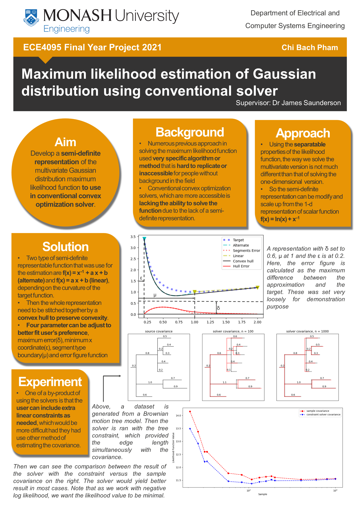
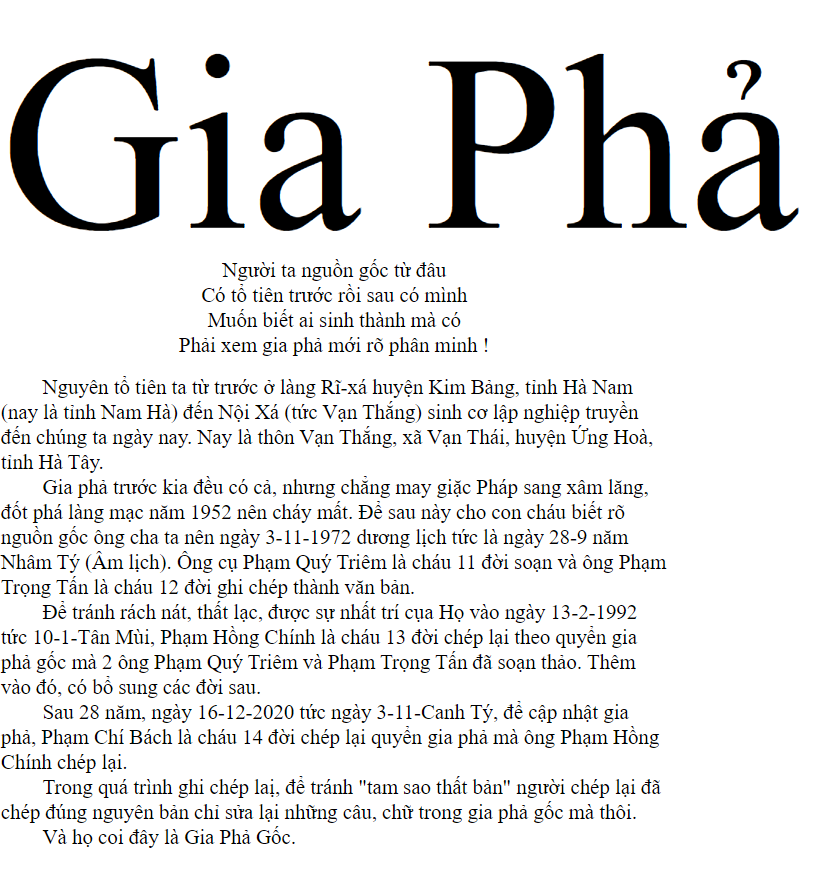
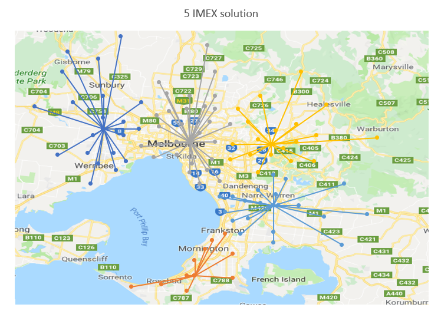

Memory efficient semi definite programming solver for Max-cut problem (WIP)
Jul 13, 2022
RepositoryMaster degree project
Aim to develop a method to solve the maxcut problem with better memory efficiency
Tag
Convex Optimization
Computational Mathematics
Optimization
Julia
Covariance-constrained Gaussian Maximum Likelihood Estimation via semidefinite approximations (WIP)
Jan 19, 2022
RepositoryDeveloped a semi-definite approximation of an interval of the Gaussian Maximum likelihood function using Gaussian quadrature. Enabling CVXR to solve the maximum likelihood estimation with option to add linear contraints on the covariance
Tag
Convex Optimization
Computational Mathematics
Optimization
R
Semi-definite approximation of Gaussian Maximum likelihood function
May 29, 2021
 Report Download RepositoryFinal year project at Monash university
Developed a semi-definite approximation of the Gaussian Maximum likelihood function using line segments. Enabling CVXPY to solve the maximum likelihood estimation with option to add linear contraints on the covariance
Tag
Convex Optimization
Computational Mathematics
Optimization
Python
Family Tree
Jan 11, 2021
 Repository WebsitePlot a family tree with python from an excel file
Tag
Python
Imex localization
May 18, 2020
 RepositoryUsing MATLAB to implement an optimization algorithm to determine the best location for IMEX location around Melbourne
Tag
MATLAB
Optimization